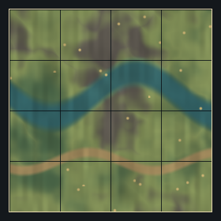
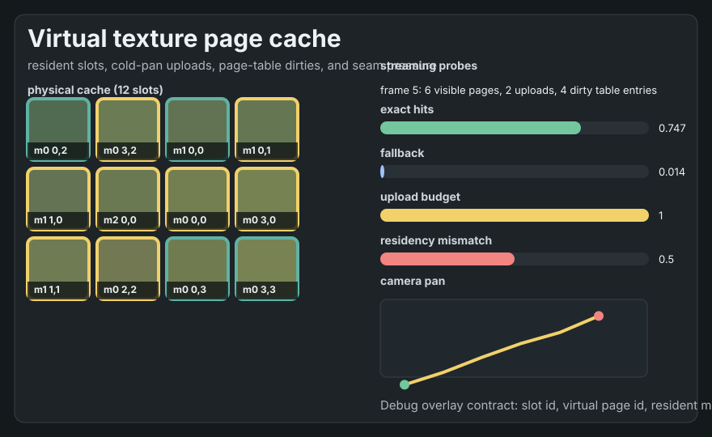
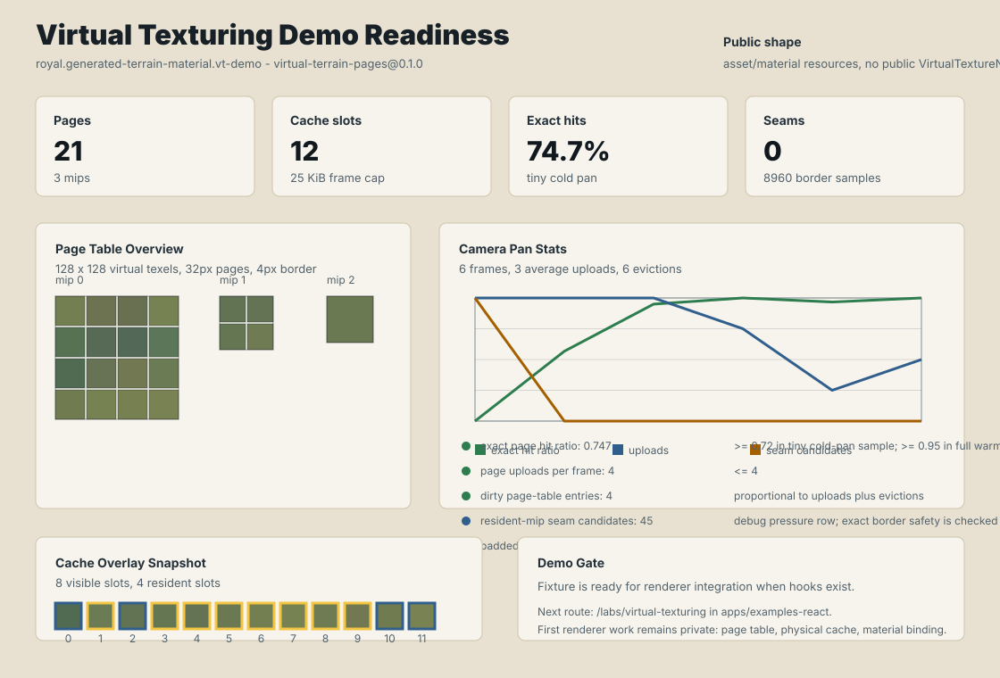

3 mips
Virtual Texturing Demo Readiness
royal.generated-terrain-material.vt-demo generated from virtual-terrain-pages@0.1.0. Public API stays asset/material shaped; there is no public VirtualTextureNode.
25 KiB frame cap
tiny cold pan
8960 samples
Page Table Overview

128 x 128 virtual texels, 32px usable pages, 4px generated borders.
Cache Overlay

8 visible slots, 4 resident slots, 6 evictions.
Compact SVG Report

Camera Pan And Seam Checks
| Status | Probe | Value | Target |
|---|---|---|---|
| pass | vt.page_hits.exact_ratioexact page hit ratio | 0.747 | >= 0.72 in tiny cold-pan sample; >= 0.95 in full warm-pan demo |
| pass | vt.uploads.pages_per_framepage uploads per frame | 4 | <= 4 |
| pass | vt.page_table.dirty_entriesdirty page-table entries | 4 | proportional to uploads plus evictions |
| info | vt.seams.candidatesresident-mip seam candidates | 45 | debug pressure row; exact border safety is checked by vt.tile_borders.mismatches |
| pass | vt.tile_borders.mismatchespadded tile border mismatches | 0 | 0 |
Renderer Demo Contract
When renderer hooks exist, build a renderer-backed glTF/material demo that binds virtual texture asset and material resources while keeping page-table, cache, upload, and shader details private.